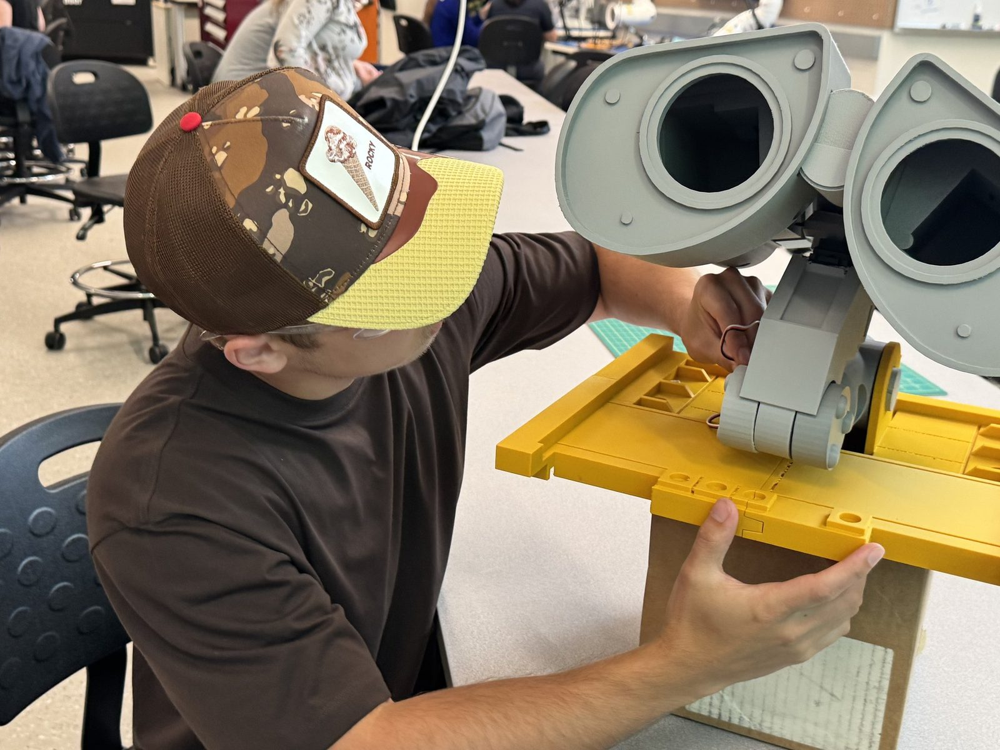
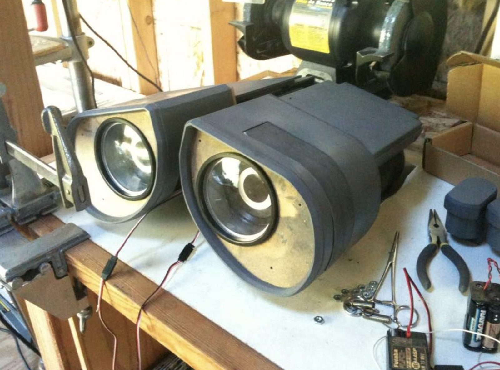

UVic Mechatronics Club Leader: Autonomous "WALL·E" Robot

wall-e/own-01.jpgLeading a team of 10+ students building a fully autonomous robot with onboard voice processing. Wake-word detection, speech-to-text, language understanding, and speech synthesis all run on-device with no cloud dependency, on a Raspberry Pi 5 controlling a 0.75 m tracked base.
| Compute | Raspberry Pi 5 |
|---|---|
| Base | 0.75 m tracked platform |
| Arm | 4 DOF: shoulder, elbow, wrist, gripper |
| Servo driver | PCA9685 on isolated supply |
| Latency | ~2–3 s speech to motion |
| Team size | 10+ students across 5 divisions |
The voice pipeline
The voice pipeline chains four software components: openWakeWord for listening, whisper.cpp for transcription, a quantized 3-billion-parameter model via llama.cpp for intent parsing, and Piper for speech synthesis. End to end it runs roughly two to three seconds from spoken request to robot motion.
Keeping the language model away from the actuators
A state machine sits between the language model and the hardware. Rather than letting the model command actuators directly, it maps natural language onto a fixed command set, so an unexpected model output becomes a rejected command instead of unplanned motion. That separation is the whole safety argument for putting a generative model on a machine that moves.
Arm and power architecture
The arm is a four-degree-of-freedom design covering shoulder, elbow, wrist, and gripper, with servo-driven joints. A PCA9685 controller on an isolated power supply manages the arm, which keeps servo current transients from disrupting the compute board.
Team
The club is organised into five divisions: controls, mechanical, composites, electrical, and social/business.
Current status
Neck dynamics and arm kinematics are working independently on the bench. Current work is integration onto the tracked base, then the voice pipeline.
Build log
9 images
wall-e/own-02.jpg wall-e/03.png
wall-e/03.png wall-e/04.webp
wall-e/04.webp wall-e/05.png
wall-e/05.png wall-e/06.png
wall-e/06.png wall-e/07.png
wall-e/07.png wall-e/08.png
wall-e/08.png wall-e/09.png
wall-e/09.png wall-e/10.png
wall-e/10.pngContact
Open to co-op and new-grad roles in robotics, aerospace, and advanced manufacturing.